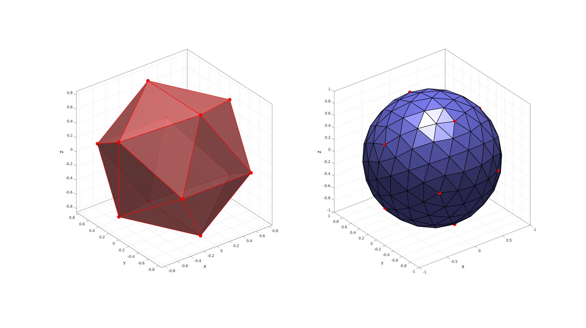
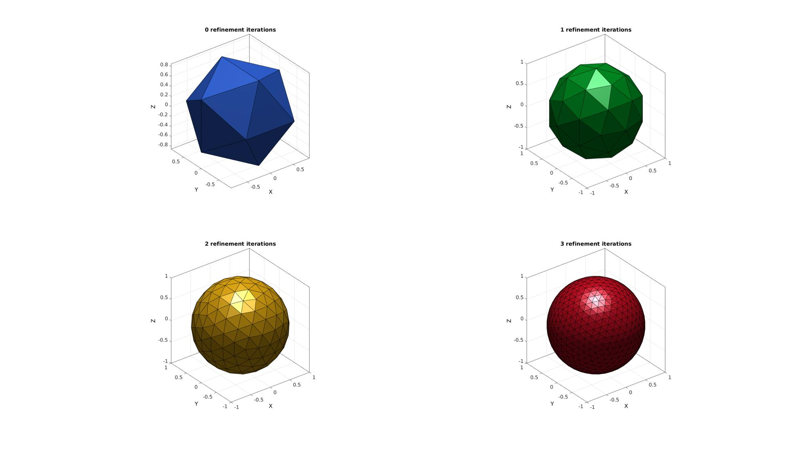
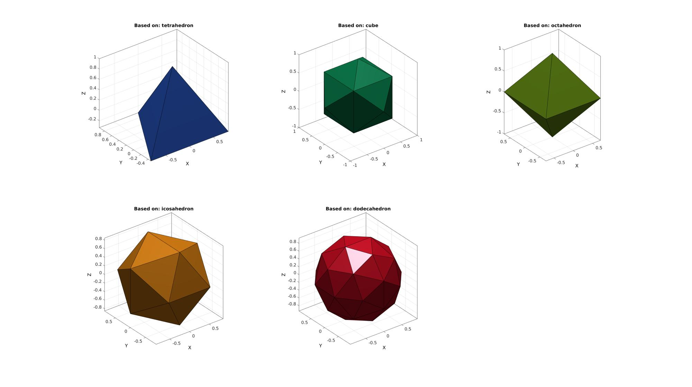

geoSphere
Below is a demonstration of the features of the geoSphere function
Contents
Syntax
[F,V,Vs]=geoSphere(n,r,solidType);
Description
Use geoSphere to generate triangulated spheres with nearly geodesic triangle distributions. The density of the triangulation can be controlled through a particular choice of n (number of mesh refinement steps).
Examples
clear; close all; clc;
Plot Settings
fontSize=15; faceAlpha=1; edgeColor=0.2*ones(1,3); edgeWidth=1.5;
Building a geodesic dome based on the icosahedron
The function inputs are n and r which define the mesh refinement and radius respectively. The mesh refinement number n defines the number of subtriangulation (see function subTri) iterations performed on an icosahedron.
r=1; %sphere radius n=2; %Refinements [F,V,~]=geoSphere(n,r); [Fi,Vi,~]=geoSphere(0,r);
Visualize sphere
cFigure; hold on; subplot(1,2,1); hold on; gpatch(Fi,Vi,'rw','r',0.8,2); plotV(Vi,'r.','MarkerSize',50); camlight headlight; axisGeom(gca,fontSize); subplot(1,2,2); hold on; gpatch(F,V,'bw','k',1,2); plotV(Vi,'r.','MarkerSize',50); camlight headlight; axisGeom(gca,fontSize); drawnow;
Below is a visualisation for n=0:1:3. The function outputs the geodesic dome faces (F) and vertices (V) and also the spherical coordinates of the vertices (Vs) (this output is suppressed in the example below).
cFigure; % Open figure for plotting %Defining triangulated geodesic domes with different densities r=1; %sphere radius n=0:1:3; %Refinements pColors=gjet(numel(n)); for q=1:1:numel(n) [F,V,~]=geoSphere(n(q),r); subplot(2,2,q); hold on; title([num2str(n(q)),' refinement iterations'],'FontSize',fontSize); gpatch(F,V,pColors(q,:)); % patchNormPlot(F,V); camlight headlight; axisGeom(gca,fontSize); end drawnow;
Using other solid types
Other platonic solids can also be used as a starting tesselation. However these may not be as geodesic as the result for the icosahedron and dodecahedron.
%e.g. using a cube solidTypes=1:5; cFigure; % Open figure for plotting titleCell={'tetrahedron','cube','octahedron','icosahedron','dodecahedron'}; pColors=gjet(numel(solidTypes)); for q=solidTypes [F,V,~]=geoSphere(0,r,q); subplot(2,3,q); hold on; title(['Based on: ',titleCell{q}],'FontSize',fontSize); gpatch(F,V,pColors(q,:)); % patchNormPlot(F,V); camlight headlight; axisGeom(gca,fontSize); end drawnow;

GIBBON www.gibboncode.org
Kevin Mattheus Moerman, gibbon.toolbox@gmail.com
GIBBON footer text
License: https://github.com/gibbonCode/GIBBON/blob/master/LICENSE
GIBBON: The Geometry and Image-based Bioengineering add-On. A toolbox for image segmentation, image-based modeling, meshing, and finite element analysis.
Copyright (C) 2019 Kevin Mattheus Moerman
This program is free software: you can redistribute it and/or modify it under the terms of the GNU General Public License as published by the Free Software Foundation, either version 3 of the License, or (at your option) any later version.
This program is distributed in the hope that it will be useful, but WITHOUT ANY WARRANTY; without even the implied warranty of MERCHANTABILITY or FITNESS FOR A PARTICULAR PURPOSE. See the GNU General Public License for more details.
You should have received a copy of the GNU General Public License along with this program. If not, see http://www.gnu.org/licenses/.